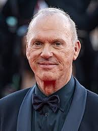
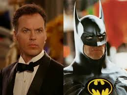
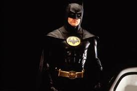
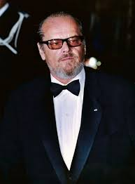
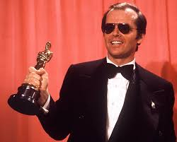
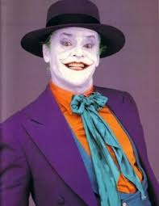
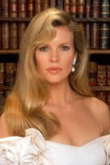
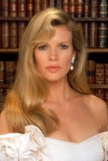

«Бетмен» (англ. Batman) — американський фільм Тіма Бертона 1989 року, що базується на однойменній серії коміксів про супергероя Бетмена. Головний герой Бетмен ховається під маскою летючої миші, одягнений в куленепробивний жилет і володіє супермашиною - Бетмобілем. Сюжетна лінія коміксів - боротьба добра зі злом, відповідає найкращим традиціям даного виду мистецтва. Коли Брюс Вейн був ще хлопчиком, на його очах розігралася страшна трагедія, він став очевидцем смерті власних батьків. Їх безжально вбили на вулиці міста Готем при спробі пограбування. Все небезпечніше ставало місто, все частіше жителі міста піддавалися насильству і грабежам. Здавалося б у Готема немає майбутнього, але в найважчий для жителів час з'являється захисник. Гроза злочинного світу, загадковий герой в костюмі кажана - «Бетмен», стає на захист мирних громадян. Хто ж насправді ця таємнича особистість, хто ховає своє обличчя за маскою супергероя, цю таємницю намагаються розкрити репортер Нокс і журналістка Вікі Вейл. Однак зло не дрімає і ось черговий злочинець, намагаючись сховатися від копів, потрапив в чан з хімікатами, так з'явився Джокер, страшний сон для міста Готем. Чи зможе Бетмен протистояти великому злу або жителі міста приречені ...
Майкл Кітон в ролі Бетмена. Майкл Кітон (англ. Michael Keaton; справжнє ім'я — Майкл Джон Дуглас; нар. 5 вересня 1951, Кораполіс, Пенсільванія, США) — американський актор. Відомий як виконавець головної ролі в фільмах «Бетмен» та «Бітлджус». Протягом двох років вивчав риторику в Кенському університеті в Огайо, однак кинув навчання і поїхав в Пітсбург. 1975 року переїхав до Лос-Анджелесу, де почав зніматися в телесеріалах. Псевдонім «Кітон» запозичений у актриси Даян Кітон (справжнє ім'я Даян Голл). Кітон взяв собі псевдонім через те, щоб уникнути плутанини з актором Майклом Дугласом. Дебют Кітона у великому кіно відбувся в 1982 році в комедії «Нічна зміна», після якого актор дотримувався комічного амплуа. Став відомий після того як зіграв привида в фільмі «Бітлджус» режисера Тіма Бертона і наркомана у фільмі «Чистий і тверезий». Наприкінці 80-х Тім Бертон запросив його зіграти в картинах «Бетмен» і «Бетмен повертається» роль борця зі злочинністю в костюмі кажана, яка стала його найвідомішої роллю. Довгий час той факт, що Кітон затверджений на роль Бетмена, переховувався за наполяганням режисера фільму Тіма Бертона. Позаяк до цього Кітон прославився своєю комічною роллю у фільмі «Бітлджус» (1988), Бертон побоювався, що завідомо негативна реакція фанатів може послужити причиною провалу фільму.
  Джек Ніколсон в ролі Джокера. Джек Ніколсон (нар. 22 квітня 1937, повне ім'я — Джон Джозеф Ніколсон, англ. John Joseph Nicholson, Нептун, Нью-Джерсі, США) — американський кіноактор, режисер, продюсер, сценарист. Ніколсон вважається одним із найвеличніших акторів в історії кіно. Він був номінований на премію «Оскар» рекордні 12 разів (протягом 1970—2003 рр.), ставши переможцем тричі. Він також є одним із двох акторів (поряд із сером Майклом Кейном), що висувалися на «Оскар» за найкращу роль (головну або другого плану) в чотирьох різних десятиліттях: 1970-х, 1980-х, 1990-х і 2000-х. 1994 року він став одним із наймолодших акторів, нагороджених премією Американського інституту кіномистецтва за життєві досягнення[5]. Джек Ніколсон також є володарем майже сотні інших престижних нагород, у тому числі BAFTA, семи «Золотих глобусів», шести премій Національної ради кінокритиків США і лауреатом премії Гільдії кіноакторів США. Ніколсон також один із двох акторів, які номінувалися за акторську гру в кожному десятиріччі, починаючи з 1960-х (інший — Майкл Кейн). Ніколсон здобув сім Золотих глобусів, а також, у 2001 році був удостоєний почестей центру Кеннеді за досягнення впродовж акторської кар'єри. Премію Американського інституту кіномистецтва за досягнення впродовж усього життя Ніколсон отримав ще в 1994 році.
  Кім Бейсінгер в ролі Вікі Вейл. Кімі́ла Енн (Кім) Бе́йсінгер (англ. Kimila Ann "Kim" Basinger; англ. вимова: [ˈbeɪsɪŋɚ], часто помилково вимовляється як Бесінджер; нар. 8 грудня 1953, Атенс, штат Джорджія, США) — американська акторка, співачка та модель. Лауреатка премій «Оскар» і «Золотий глобус» за роль у фільмі «Таємниці Лос-Анджелеса» (1997). За внесок у розвиток кіноіндустрії удостоєна зірки на Голлівудській алеї слави. На початку 1970-х років була однією з найпопулярніших американських моделей, з'явившись на обкладинках десятків журналів. В цей час вона відвідувала класи театральної школи Neighborhood Playhouse[10] і співала в клубах. У 1976 році переїхала в Лос-Анджелес, де почала грати невеликі ролі в кіно. Першу головну роль отримала у фільмі «Портрет чарівності».У 1983 році зіграла дівчину Бонда в картині «Ніколи не кажи „ніколи“» із серії фільмів про Джеймса Бонда.

 
